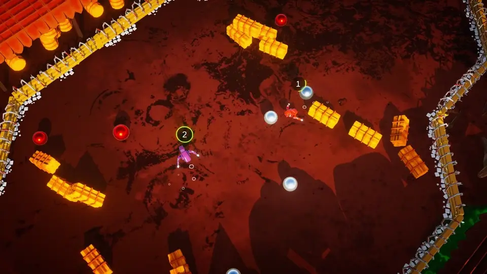
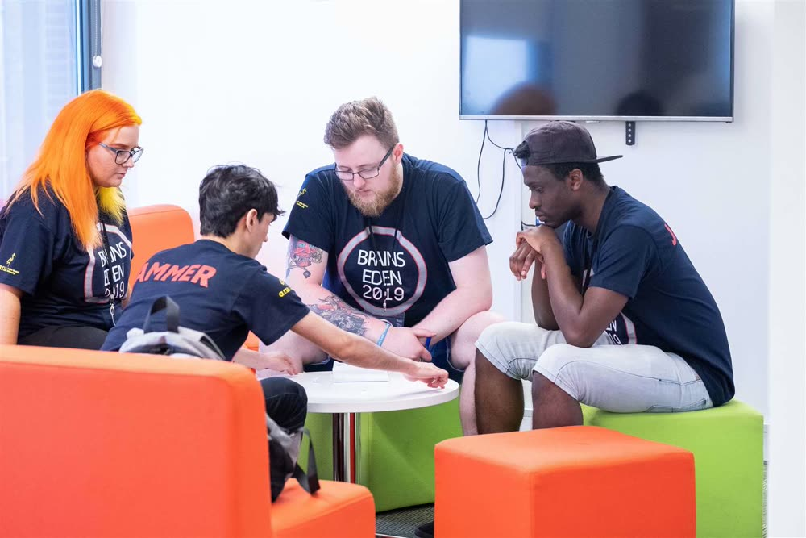
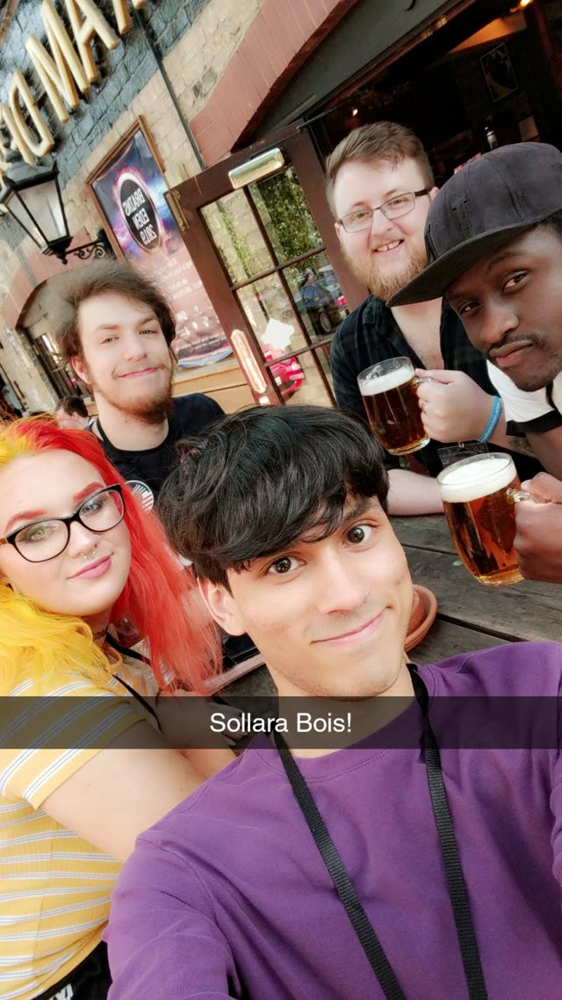
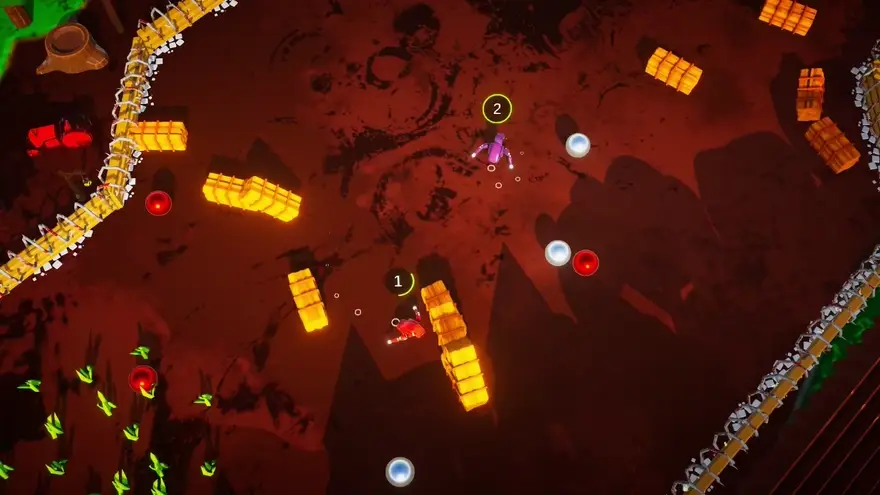
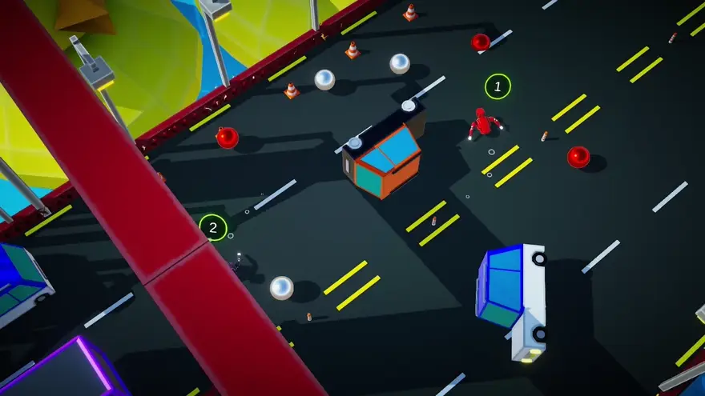

Robrawl
Robrawl is a 2–4 player local multiplayer robot brawler built by Team Sollara for Brains Eden 2019, a UK student game development festival. Robots duke it out in an arena with punches, knockback, and pickable "pinballs" they can launch at each other: last robot standing wins.

Team Sollara
- Riley Clarke · Programmer / Project Manager
- Alex Murphy · Sound
- Francesca Rice · Artist
- Scott Foey · Design
- Stephen Ogbeiwi · Design
I led as project manager and programmer, working in C# alongside Odin, DOTween, TextMesh Pro, and Rewired to drive local multiplayer input across up to four controllers. The game runs on Unity 2019.1's Lightweight Render Pipeline.

Team Sollara at Brains Eden 2019.

The Project
Robrawl drops two to four players into a top-down arena as robots, fighting to be the last one standing. There's no fixed loadout or ranged weapon to start: every robot can punch for knockback, dodge/dash out of trouble on a cooldown, and pick up one of the "pinballs" bouncing around the arena to fling at an opponent for ranged damage. Multiple arenas shipped with distinct themes, from a spike-fenced dojo to a neon, low-poly city street lined with traffic cones and parked cars.
The Pinball System
A BallSpawner drops pinballs into the arena on a timer,
doubling how many spawn each wave (up to a cap) so a match starts
sparse and escalates into chaos. Balls are only safe to grab below a
speed threshold: a PinBall shifts from white to
red as it crosses that threshold, telegraphing whether it's currently
pickable or still dangerous to touch. Once a player grabs a slow
ball, they can fire it from their Player's launch point
at high speed toward an opponent.

The dojo arena: robots circling for an opening while pinballs and crates litter the floor.
Knockback, Health & Ring-Outs
Damage is handled through a small, reusable Health
component and a static HealthDamager helper that any
system can call into: a punch, a thrown pinball, or the
spiked Fence bounding each arena all route through the
same AttemptToDamage / AttemptToKnockback
calls. Taking a hit grants a short invulnerability window before a
robot can be damaged again, stopping one lucky combo from chaining
into a stunlock.
Rather than a shrinking ring, ring-outs are handled by a simple
distance check: PlayerManager runs a respawn/ring-out
coroutine that removes any robot knocked far enough from the arena
centre, so a big enough hit (a punch or a well-aimed pinball)
can end a robot's run outright instead of just chipping its
health.

The city-street arena: same combat loop, completely different dressing.
Robrawl shipped as Team Sollara's entry to Brains Eden 2019. The source lives in a private university-team repository rather than a public one, so there's no code link here, but the pinball push-your-luck loop and the reusable pooling/health framework behind it carried straight into later Sollara Games projects.